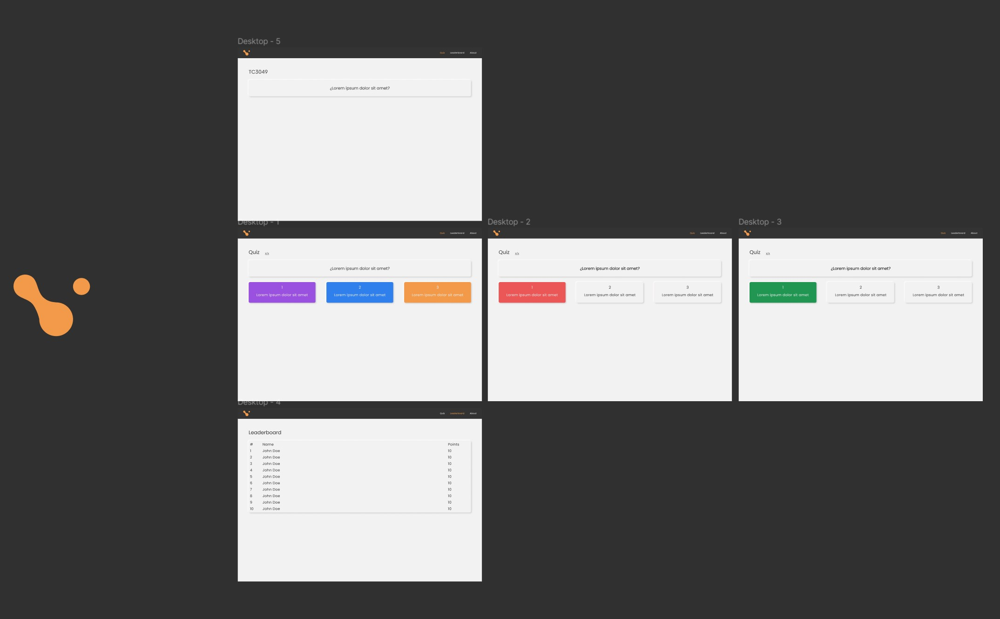

Final Project: Quiz Application with Microservices¶ ↑
This documentation was developed as part of the final project for the Software Design and Architecture course (Tc3049), at the Tecnológico de Monterrey, Campus Estado de México.
Authors¶ ↑
-
A01747290 Diego Palmerin
-
A01748354 Fernando Melgar
Overview¶ ↑
The application consists of two cloud-native microservices and a client application. Everything was written in ruby 2.7.
The microservices are FaaS implementations running in the AWS Cloud and connected to their respective DynamoDB tables.
UI/UX Design¶ ↑

We used Diego's Peoria css library to quickly implement a clean simple design while keeping our package size to a minimum. We took inspiration from neumorphism's principles to create a minimalist highly focused UI interface.
Technical Details¶ ↑
The client application uses the web server framework Sinatra to handle client connections (routing, rendering, session handling) and Faraday to communicate with the backend microservices.
The server uses sessions to handle the user flow and url parameters to pass information from one screen to another
How to install and run the application and all the microservices¶ ↑
The microservices are already up and running in the AWS cloud, but if we were to take them down, all you would need to do is:
-
Create an AWS Account
-
Go to the DynamoDB Service and Create a new table
-
Give whichever name you prefer for the Questions table
-
Go to the Lambda Service and Create a new function
-
Copy and paste the questions.rb code into the code tab
-
Click on “Add Trigger” and add an API Gateway
-
Create a new REST API gateway with an OPEN security policy
-
Take note of the URL for the Gateway you just created
-
Repeat steps 2-7 for the Leaderboard service
-
Install the sinatra and faraday gems
-
Replace the constants for the gateways with the ones you just created
-
Run the router.rb program and go to localhost:4567
4+1 architectural view model¶ ↑
Logical view¶ ↑

Process view¶ ↑
Questions GET request flow¶ ↑

Leaderboard GET request flow¶ ↑

Leaderboard POST request flow¶ ↑

Development view¶ ↑
front
L public
| L main.css
L views
| L error.erb
| L index.erb
| L leaderboard.erb
| L questions.erb
| L quizScore.erb
L router.rb

Microservice Layer Diagram
Physical view¶ ↑

Deployment Diagram
Scenarios (Use case view)¶ ↑

Patterns used¶ ↑
DSL¶ ↑
Sinatra creates a DSL interface that abstracts away the server logic and focuses on creating route controllers
MVC¶ ↑
Sinatra follows the MVC design philosophy and implements embedded ruby for the templates.
Iterator¶ ↑
Since we are working with arrays of data, we're using an implementation of the iterator pattern. We implemented a pseudo-subset of this in our quiz flow where we loop over the questions received from the gateway.
State¶ ↑
The client behaves very much like a finite-state machine. it has a finite number of functions which can be accessed through the url at will
Dependency Inyection¶ ↑
We use .interactor classes for our data structures to generalize the interactions and give us flexibility to adapt our code. If, for example, we wanted to migrate to another database provider, we would only need to change the dependency we send to our interactor.
Singleton¶ ↑
For our gateways we use singletons since creating a new instance of the gateway would be costly and might lead to problems preserving an updated application state.
Acknowledgments (optional)¶ ↑
Ariel Ortiz :)¶ ↑
References¶ ↑
- Ortiz A. <em>lambda_function.rb</em> https://github.com/ariel-ortiz/202211-tc3049.1/blob/main/DynamoDB/books/lambda_function.rb - https://refactoring.guru/design-patterns/catalog - https://www.scribd.com/document/84656947/Architectural-manifesto-Designing-software-architectures-Part-5 - https://rubydoc.info/gems/sinatra
-
Ruby-Doc.org. RDoc Markup Reference. http://ruby-doc.org/stdlib-2.4.1/libdoc/rdoc/rdoc/RDoc/Markup.html Accessed April 20 , 2022.
-
Oreilly. Head First Design Patterns http://learning.oreilly.com/library/view/head-first-design/9781492077992/ch03.html Accessed April 20, 2022.z